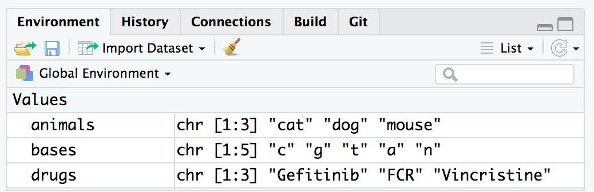
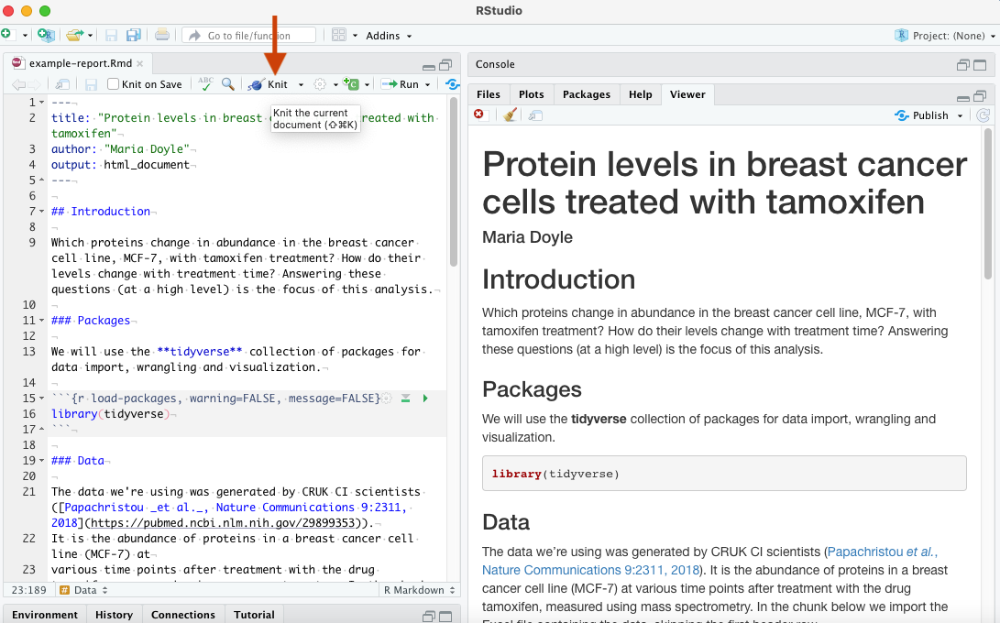

Learning objectives
- Describe the main panes in RStudio
- Generate and edit an R Markdown report
- Import tabular data into R
- Inspect data for missing values
A video that goes through this session’s material can be found here.
Introduction
This is a ‘next-steps’ course, designed for follow-on practice with cancer datasets after completing DataCamp’s Introduction to the Tidyverse (or another general introductory R course). Therefore, we assume you know some R basics already, at least the content of the DataCamp course. R for Data Science book is an excellent reference book if you want to look up anything you don’t recall or are not very familiar with. We also assume you know some reasons why learning R is good (as you’ve already started 😄) but below are a list of reasons why learning R is useful and worth your time.
Why learn R?
R involves creating & using code documents which makes the steps you used in your analysis clear and can be inspected by someone else for feedback and error-checking.
R produces high-quality graphics suitable for publication in journals or the web.
R is interdisciplinary and extensible and has thousands of installable packages to extend its capabilities. R has packages for image analysis, GIS, time series, population genetics, and a lot more.
R scales well to work on data of all shapes and sizes.
R can connect to spreadsheets, databases, and many other data formats, on your computer or on the web.
R has a large and welcoming community - Thousands use R daily and many of them are willing to help you through websites such as Stack Overflow or the RStudio community.
Not only is R free, but it is also open-source and cross-platform.
R code is great for reproducibility. An increasing number of journals and funding agencies expect analyses to be reproducible, so knowing R will give you an edge with these requirements.
R integrates with other tools to generate manuscripts from your code. This document (R Markdown, a .Rmd file) is a case in point.
We will be using R Markdown for the assignments in this course to help
you learn how to use it. Information on creating R Markdown manuscripts
for journals can be found here
and in this
paper. Some examples of R Markdown in action:
*
PhD
thesis
* Figures
for a Peter Mac bioinformatics paper
*
Analysis
results using workflowr
(used by a few groups at Peter Mac to share/collaborate)
RStudio a brief tour
RStudio provides us with a friendly interface to the R statistical programming language.

It consists of four main “Panes”:
- the Editing Pane (Source) for your scripts and documents (top-left, in the default layout)
- the R Console (bottom-left).
- your Environment/History (top-right),
- your Files/Plots/Packages/Help/Viewer (bottom-right)
These can be re-sized and moved around to suit how you like to work (see menu, Tools -> Global Options -> Pane Layout)
One of the advantages of using RStudio is that all the information you need to write code is available in a single window. Additionally, with many shortcuts, autocompletion, and highlighting for the major file types you use while developing in R, RStudio will make typing easier and less error-prone.
Editing pane
By default the top left-hand pane is one for creating, editing & running R files e.g. scripts and reports.

A script is an R program that you have written. A good practice is for that script to perform only one role in your analysis workflow and so you may have several R scripts which you call, in a particular sequence, to analyse your data. A script is basically a text file that contains R commands and (ideally) comments to explain what the codes function is (as a documentation process).
As well as R scripts, there are many types of RStudio document including R Markdown files. We will use R Markdown in the teaching of this course. This is so you can learn how to generate reports summarising your analysis for collaborating or sharing your work with others.
Console
Coming down the screen to the bottom left-hand pane we find the console window. This is where we can find output produced by running our R scripts.

We can also try out snippets of R code here. Those of you who have only used graphical interfaces like Windows or MacOS where you click on commands using a mouse may find this aspect of R somewhat different. We type in commands to R using the command line.
This area can also be used like a calculator. Let’s just type in
something like 23 + 45 followed by the return key and see
what happens. You should get the following:
> 23 + 45
[1] 68Now 68 is clearly the answer but what is that 1 in brackets?
Here is another example to explain. If we type 1:36 and
press enter, what happens? R generates output counting from 1 to 36 but
cannot fit all the output on one line and so starts another like
this:
> 1:36
[1] 1 2 3 4 5 6 7 8 9 10 11 12 13 14 15 16 17 18 19 20 21 22 23 24 25
[26] 26 27 28 29 30 31 32 33 34 35 36Now we have two lines beginning with a number in square brackets.
Note that the number of values displayed on each line may differ on your
computer; it largely depends on the width of your console pane and the
font size. Try creating a larger sequence of numbers,
e.g. 1:100, if all 36 numbers fit on a single line in your
case.
This is just R helping us to keep tabs on which number we are looking
at. [1] denotes that the line starts with the first result
and the [26] denotes that this line starts with the 26th
number. Let’s try another one and generate a sequence incrementing in
steps of 2:
> 1:36 * 2
[1] 2 4 6 8 10 12 14 16 18 20 22 24 26 28 30 32 34 36 38 40 42 44 46 48 50
[26] 52 54 56 58 60 62 64 66 68 70 72There are other tabs on this pane but we shall not be covering these on this course.
Environment
Next we move to the top right-hand corner pane. Here we have even more tabs (of which we will only consider two Environment and History).

Environment keeps track on R variables which we create (more on those later) and their contents. History is like a tally role of all the R commands we have entered in our session.
Files, Plots & Help
Our final bottom right-hand pane also has several tabs. The Files tab is a file explorer that enable us to move around our directories and select which files we wish to work on. We can also change the default working directory that Rstudio will use.

The Plots tab is where any graphs that we create in R will appear. We can move through them using the arrow buttons and the export button will convert them to different graphics formats e.g. for publication in a paper or for the web.
The Packages tab shows which R packages are installed (These expand R’s functionality and again will be covered later) and can also install new packages.
The Help tab is a massively useful tab which enables you to search R help index to get help pages on R functions and provide example code to help you use them in your R scripts.
The Viewer tab is where we can preview an R markdown report after we Knit, more on that shortly.
Our first look at an R Markdown report
Our overall goal for this course is to give you the ability to import your data into R, format it, select a subset of the data most of interest for a given analysis, carry out an analysis to summarize these data, create visualizations of the data, and generate a reproducible report.
So let’s see an example of what we’ll be learning and generate our first visualisation and report. By the end of this course we should be able to explain what each line of the code does.
- Download the example report (Rmd) file from the link above
- In your RStudio top menu go to File > Open File and open the Rmd file
- Click the Knit button and inspect the report in the Viewer pane (see below)
- Try out the exercise in the Rmd file to edit the file. Knit again to see the changes in the report.

As described in the R for Data Science book, an R Markdown, or .Rmd, document contains three types of content:
- An (optional) YAML header surrounded by
---. - Chunks of R code surrounded by
```. - Text mixed with simple text formatting like
# headingand**bold**.
When you open an .Rmd, you get a notebook interface where code and output are interleaved. You can run each code chunk by clicking the Run icon (it looks like a play button at the top of the chunk), or by pressing Cmd/Ctrl + Shift + Enter. RStudio executes the code and displays the results inline with the code. When you knit the document, R Markdown executes all of the code chunks and creates a document (whichever you specify: HTML/PDF/Word) which includes the code and its output. Here a HTML file will be generated in the folder where you have the example_report.Rmd file. To create an R Markdown file in RStudio you can use File > New File > R Markdown.
Next we’ll play around with the example R Markdown file some more and explain some of the things you can see in it.
Packages
There are thousands of R packages that extend R’s core functionality to provide specialized functions for doing all kinds of things. There are R packages that provide various kinds of visualizations and plotting functions, others that let us manipulate data in interesting and useful ways, and still others that give us access to cutting-edge machine learning algorithms. Several packages have been developed by bioinformaticians at Peter Mac, mainly focusing on genomic and transcriptomic analysis methods.
You need to load a package using the
library() function in order to be able to
use the functions and data sets that the package provides. We can load
the core tidyverse packages in one go, as you can see in the
example_report.Rmd, as follows.
## ── Attaching packages ─────────────────────────────────────── tidyverse 1.3.1 ──## ✔ ggplot2 3.3.6 ✔ purrr 0.3.4
## ✔ tibble 3.1.7 ✔ dplyr 1.0.9
## ✔ tidyr 1.2.0 ✔ stringr 1.4.0
## ✔ readr 2.1.2 ✔ forcats 0.5.1## ── Conflicts ────────────────────────────────────────── tidyverse_conflicts() ──
## ✖ dplyr::filter() masks stats::filter()
## ✖ dplyr::lag() masks stats::lag()The output from this command tells us which packages were loaded, one
of which is ggplot2 that provides excellent plotting
functions for visualizing our data and will be the main focus next
week.
We also got a warning about some conflicts. This tells us that there
are functions loaded as part of the dplyr package that have
the same name as functions that are in the stats package.
The stats package was already loaded, from when we first
started our R session, and the functions referred to in the warning are
now masked; to use these instead of their dplyr namesakes
you need to specify them fully by adding the package name and
:: as shown in the warning message.
Installing packages
If you got the following error message when trying to load the tidyverse, then you haven’t yet installed it.
> library(tidyverse)
Error in library(tidyverse) : there is no package called ‘tidyverse’Installing packages should be relatively straightforward using the
install.packages() function. Note that you only need to
install a package once on your computer (unless you want to install a
newer version), then you use library() to load it every
time you start an R session.
install.packages("tidyverse")If you’re using R at a regular console within a terminal window, i.e. not RStudio, you may be asked to select one of several mirrors of the CRAN R package repository hosted at different locations around the world.
For some packages you may be asked to choose between a binary and a source package, particularly if the latest version of the package is only available in source form and that package contains code written in another language such as C. This could be a problem if you don’t have a C compiler installed on your computer.
Importing data into R
Another of the tidyverse packages loaded when we ran
library(tidyverse) is the readr package, which
provides functions for reading tabular data into a tibble and writing
tibbles to tab-delimited and comma-separated value (CSV) files. A tibble is tidyverse’s
table format, a modern version of R’s data frame.
For example, the clinical data for the METABRIC breast cancer dataset generated at CRUK CI can be downloaded as a tab-delimited file from cBioPortal. Targeted sequencing was performed for 2509 primary breast tumours, along with 548 matched normals, using a panel of 173 of the most frequently mutated breast cancer genes as part of the METABRIC study (Pereira et al., Nature Communications 7:11479, 2016).
This file contains information in tabular form in which values are
separated by tab characters so we’ll use the
read_tsv() to read these data.
Create a new chunk in the Rmd file you downloaded above. You can insert an R code chunk either using the RStudio toolbar (the Insert button) or the keyboard shortcut Ctrl + Alt + I (Cmd + Option + I on macOS). Copy/paste the line of code below into the chunk and then click the chunk’s Run button.
metabric <- read_tsv("https://zenodo.org/record/6450144/files/brca_metabric_clinical_data.tsv")## Rows: 2509 Columns: 20
## ── Column specification ────────────────────────────────────────────────────────
## Delimiter: "\t"
## chr (14): Patient ID, Sample ID, Cancer Type, Cancer Type Detailed, 3-Gene c...
## dbl (6): Mutation Count, Age at Diagnosis, Cohort, Lymph nodes examined pos...
##
## ℹ Use `spec()` to retrieve the full column specification for this data.
## ℹ Specify the column types or set `show_col_types = FALSE` to quiet this message.read_tsv() prints a message telling us which types it
has assigned to each of the columns it has read, although in this case
the table has quite a lot of columns and it only outputs details about
the first few.
To try out the rest of the code shown in this document below, for each line or code section, insert a chunk, copy/paste or type the commands and Run.
Run the line below to print the clinical data set. We can see that
read_tsv() created a tibble.
metabric## # A tibble: 2,509 × 20
## `Patient ID` `Sample ID` `Cancer Type` `Cancer Type Detail…` `Mutation Count`
## <chr> <chr> <chr> <chr> <dbl>
## 1 MB-0000 MB-0000 Breast Cancer Breast Invasive Duct… NA
## 2 MB-0002 MB-0002 Breast Cancer Breast Invasive Duct… 2
## 3 MB-0005 MB-0005 Breast Cancer Breast Invasive Duct… 2
## 4 MB-0006 MB-0006 Breast Cancer Breast Mixed Ductal … 1
## 5 MB-0008 MB-0008 Breast Cancer Breast Mixed Ductal … 2
## 6 MB-0010 MB-0010 Breast Cancer Breast Invasive Duct… 4
## 7 MB-0014 MB-0014 Breast Cancer Breast Invasive Duct… 4
## 8 MB-0020 MB-0020 Breast Cancer Breast Invasive Lobu… NA
## 9 MB-0022 MB-0022 Breast Cancer Breast Mixed Ductal … 1
## 10 MB-0025 MB-0025 Breast Cancer Breast Invasive Duct… 5
## # … with 2,499 more rows, and 15 more variables:
## # `3-Gene classifier subtype` <chr>, `Age at Diagnosis` <dbl>,
## # Cellularity <chr>, Chemotherapy <chr>, Cohort <dbl>, `ER Status` <chr>,
## # `ER status measured by IHC` <chr>, `HER2 Status` <chr>,
## # `HER2 status measured by SNP6` <chr>, `Hormone Therapy` <chr>,
## # `Inferred Menopausal State` <chr>, `Integrative Cluster` <chr>,
## # `Lymph nodes examined positive` <dbl>, `Neoplasm Histologic Grade` <dbl>, …
read_csv() and
read_tsv()
read_csv() reads data from a comma-separated value (CSV)
file into a tibble. read_tsv() is the equivalent function
that works on tab-delimited files.
These functions expect the first line to contain column names and try to make sensible guesses at the type of data in each column. You can change this by specifying various arguments, e.g. to skip comment lines beginning with a specific character (e.g. “#”) or to tell the function what the column types are.
patients <- read_csv(“patients.csv”)
To export a CSV or TSV file from R you can use write_csv()
or write_tsv().
We are now in a position to explore these data. We can see all column
names with R’s built-in colnames().
colnames(metabric)## [1] "Patient ID" "Sample ID"
## [3] "Cancer Type" "Cancer Type Detailed"
## [5] "Mutation Count" "3-Gene classifier subtype"
## [7] "Age at Diagnosis" "Cellularity"
## [9] "Chemotherapy" "Cohort"
## [11] "ER Status" "ER status measured by IHC"
## [13] "HER2 Status" "HER2 status measured by SNP6"
## [15] "Hormone Therapy" "Inferred Menopausal State"
## [17] "Integrative Cluster" "Lymph nodes examined positive"
## [19] "Neoplasm Histologic Grade" "Nottingham prognostic index"We can access individual columns with
table_name$column_name, for example
metabric$Chemotherapy
metabric$Chemotherapy## [1] "NO" "NO" "YES" "YES" "YES" "NO" "YES" "YES" "NO" NA "NO" "NO"
## [13] "NO" "NO" "YES" "NO" "YES" "YES" "NO" "NO" "NO" "NO" "YES" "YES"
## [25] "NO" "NO" "NO" "NO" "YES" "NO" "NO" "NO" "NO" "NO" "YES" "YES"
## [37] "NO" "YES" "YES" "NO" "YES" "NO" "NO" "NO" "NO" "YES" "NO" "YES"
## [49] "YES" "NO" "NO" "NO" "NO" "NO" "NO" "YES" "NO" "NO" "YES" "NO"
## [61] "YES" "NO" "YES" "YES" "NO" "NO" "NO" "NO" "NO" "NO" "NO" "NO"
## [73] "NO" "NO" "NO" "NO" "NO" "NO" "NO" "NO" "NO" "NO" "NO" "NO"
## [85] "NO" "NO" "YES" "NO" "NO" "NO" "NO" "YES" "YES" "YES" "NO" "NO"
## [97] "NO" "NO" "NO" "YES" "NO" "YES" "NO" "YES" "NO" "NO" "YES" "NO"
## [109] "NO" "NO" "NO" "YES" "YES" "NO" "NO" "NO" "YES" "NO" "YES" "YES"
## [121] "NO" "NO" "YES" "YES" "YES" "NO" "NO" "YES" "NO" "NO" "NO" "NO"
## [133] "YES" "NO" "YES" "NO" "NO" "YES" "YES" "NO" "NO" "NO" "NO" "NO"
## [145] "NO" "NO" "NO" "NO" "NO" "NO" "YES" "YES" "YES" "NO" "NO" "NO"
## [157] "YES" "NO" "NO" "NO" "YES" "NO" "NO" "NO" "YES" "NO" "YES" "NO"
## [169] "NO" "NO" "NO" "NO" "NO" "NO" "NO" "YES" "NO" "NO" "NO" "NO"
## [181] "YES" "NO" "NO" "NO" "YES" "NO" "NO" "NO" "NO" "NO" "YES" "NO"
## [193] "NO" "YES" "NO" "NO" "YES" "NO" "NO" "NO" "NO" "NO" "NO" "YES"
## [205] "NO" "YES" "NO" "NO" "NO" "NO" "NO" "NO" "NO" "YES" "NO" "NO"
## [217] "NO" "NO" "NO" "YES" "NO" "YES" "NO" NA "NO" "NO" NA "YES"
## [229] "NO" "NO" "NO" "NO" "NO" "NO" "NO" "YES" "NO" "YES" "NO" "NO"
## [241] "NO" "NO" "YES" "NO" "NO" "NO" "YES" "NO" "NO" "NO" "YES" "NO"
## [253] "YES" "NO" "NO" "NO" "YES" "YES" "YES" "NO" "YES" "NO" "NO" "NO"
## [265] "NO" "YES" "YES" "NO" "YES" "YES" "NO" "NO" "YES" "NO" "YES" "YES"
## [277] "YES" "YES" "YES" "YES" "NO" "NO" "YES" "NO" "NO" "YES" "YES" "YES"
## [289] "NO" "NO" "NO" "NO" "YES" "YES" "NO" "YES" "NO" "YES" "NO" "NO"
## [301] "NO" "NO" "YES" "NO" "NO" "NO" "YES" "NO" "YES" "NO" "NO" "NO"
## [313] "NO" "NO" "YES" "NO" "NO" "NO" "YES" "NO" "YES" "NO" "NO" "NO"
## [325] "YES" "YES" "YES" "YES" "NO" "NO" "YES" "NO" "NO" "YES" "NO" "NO"
## [337] "NO" "NO" "YES" "NO" "YES" "YES" "YES" "YES" "NO" "NO" "NO" "YES"
## [349] "NO" "YES" "NO" "YES" "NO" "YES" "YES" "YES" "YES" "YES" "YES" "NO"
## [361] "NO" "YES" "NO" "NO" "NO" "YES" "YES" "YES" "NO" "NO" "YES" "YES"
## [373] "YES" "NO" "NO" "NO" "YES" "NO" "NO" "NO" "NO" "NO" "NO" "NO"
## [385] "YES" "YES" "NO" "YES" "NO" "NO" "YES" "YES" "NO" "NO" "YES" "YES"
## [397] "YES" "YES" "YES" "NO" "NO" "YES" "YES" "NO" "NO" "YES" "YES" "NO"
## [409] "YES" "NO" "YES" NA "NO" "NO" "NO" "YES" "NO" "NO" "NO" "YES"
## [421] "YES" "NO" "YES" "NO" "NO" "NO" "NO" "YES" "NO" "NO" "YES" "NO"
## [433] "YES" "NO" "NO" "NO" "NO" "NO" "NO" "YES" "NO" "NO" "YES" "NO"
## [445] "NO" "YES" "NO" "NO" "YES" "NO" "YES" "NO" "YES" "NO" "NO" "NO"
## [457] "YES" "NO" "YES" "NO" "NO" "YES" "YES" "NO" "NO" "NO" "NO" "YES"
## [469] "YES" "NO" "NO" "NO" "NO" "NO" "NO" "YES" "YES" "NO" "NO" "NO"
## [481] "NO" "NO" "NO" "YES" "NO" "NO" "NO" "NO" "NO" "NO" "NO" "NO"
## [493] "NO" "NO" "NO" "NO" "YES" "NO" "YES" "NO" "YES" "NO" "NO" "YES"
## [505] "YES" "YES" "NO" "YES" "NO" "YES" "NO" "NO" "NO" "NO" "YES" "NO"
## [517] "NO" "YES" "NO" "NO" "YES" "YES" "NO" "NO" "NO" "NO" "NO" "NO"
## [529] "NO" "NO" "NO" "NO" "YES" "NO" "NO" "NO" "NO" "NO" "NO" "YES"
## [541] "NO" "YES" "NO" "NO" "NO" "NO" "NO" "NO" "NO" "NO" "YES" "NO"
## [553] "NO" "NO" "YES" "NO" "YES" "YES" "NO" "NO" "NO" "NO" "NO" "NO"
## [565] "YES" "NO" "YES" "NO" "NO" "NO" "NO" "NO" "NO" "NO" "NO" "NO"
## [577] "NO" "NO" "NO" "NO" "NO" "NO" "NO" "NO" "NO" "NO" "NO" "NO"
## [589] "NO" "NO" "NO" "NO" "NO" "NO" "NO" "NO" "YES" "YES" "NO" "NO"
## [601] "NO" "NO" "YES" "NO" "NO" "NO" "NO" "NO" "NO" "NO" "YES" "NO"
## [613] "NO" "NO" "YES" "NO" "NO" "NO" "NO" "NO" "NO" "NO" "YES" "YES"
## [625] "NO" "YES" "NO" "YES" "YES" "NO" "YES" "NO" "NO" "NO" "NO" "NO"
## [637] "NO" "NO" "NO" "NO" "NO" "YES" "NO" "NO" "NO" "NO" "NO" "NO"
## [649] "NO" "NO" "NO" "NO" "NO" "NO" "NO" "NO" "NO" "YES" "NO" "NO"
## [661] "NO" "NO" "NO" "NO" "YES" "NO" "NO" "YES" "NO" "NO" "YES" "NO"
## [673] "NO" "NO" "NO" "NO" "NO" "NO" "YES" "YES" "NO" "NO" "YES" "NO"
## [685] "YES" "NO" "NO" "NO" "NO" "NO" "NO" "NO" "NO" "NO" "NO" "NO"
## [697] "NO" "YES" "YES" "YES" "NO" "NO" "NO" "NO" "YES" "NO" "NO" "NO"
## [709] "NO" "NO" "NO" "NO" "NO" "NO" "NO" "YES" "NO" "NO" "YES" "NO"
## [721] "NO" "NO" "NO" "NO" "NO" "NO" "NO" "NO" "NO" "YES" "NO" "NO"
## [733] "NO" "NO" "NO" "NO" "NO" "NO" "NO" "NO" "NO" "YES" "YES" "NO"
## [745] "NO" "NO" "YES" "YES" "NO" "NO" "NO" "NO" "NO" "YES" "YES" "NO"
## [757] "NO" "NO" "NO" "YES" "NO" "NO" "NO" "YES" "YES" "NO" "NO" "NO"
## [769] "YES" "NO" "NO" "YES" "NO" "YES" "NO" "NO" "NO" "NO" "NO" "NO"
## [781] "NO" "NO" "NO" "NO" "YES" "YES" "NO" "NO" "NO" "NO" "NO" "YES"
## [793] "NO" "NO" "NO" "NO" "NO" "NO" "NO" "NO" "NO" "NO" "NO" "NO"
## [805] "NO" "NO" "NO" "NO" "NO" "NO" "NO" "NO" "NO" "NO" "NO" "NO"
## [817] "NO" "NO" "NO" "NO" "NO" "NO" "NO" "NO" "NO" "NO" "NO" "NO"
## [829] "NO" "NO" "NO" "NO" "NO" "NO" "NO" "YES" "NO" "NO" "NO" "NO"
## [841] "YES" "NO" "NO" "NO" "NO" "NO" "NO" "NO" "NO" "NO" "NO" "NO"
## [853] "NO" "NO" "NO" "NO" "NO" "NO" "NO" "YES" "NO" "NO" "NO" "NO"
## [865] "NO" "NO" "NO" "NO" "NO" "NO" "NO" "NO" "NO" "NO" "NO" "NO"
## [877] "NO" "NO" "NO" "NO" "NO" "NO" "NO" "NO" "NO" "NO" "YES" "NO"
## [889] "NO" "NO" "YES" "NO" "NO" "NO" "NO" "YES" "NO" "NO" "NO" "NO"
## [901] "NO" "NO" "NO" "NO" "NO" "YES" "NO" "NO" "NO" "NO" "NO" "NO"
## [913] "NO" "NO" "YES" "NO" "NO" "NO" "NO" "NO" "NO" "NO" "YES" "NO"
## [925] "NO" "NO" "NO" "NO" "YES" "YES" "NO" "NO" "NO" "NO" "NO" "NO"
## [937] "NO" "NO" "NO" "NO" "NO" "NO" "NO" "NO" "NO" "NO" "NO" "NO"
## [949] "YES" "NO" "NO" "NO" "NO" "NO" "NO" "NO" "NO" "NO" "NO" "NO"
## [961] "NO" "NO" "NO" "NO" "NO" "NO" "NO" "NO" "NO" "NO" "NO" "NO"
## [973] "NO" "NO" "NO" "NO" "NO" "NO" "NO" "NO" "NO" "NO" "NO" "NO"
## [985] "YES" "NO" "YES" "YES" "NO" "NO" "NO" "NO" "NO" "NO" "NO" "NO"
## [997] "NO" "NO" "NO" "YES" "YES" "YES" "NO" "NO" "NO" "NO" "NO" "NO"
## [1009] "NO" "NO" "YES" "YES" "NO" "NO" "NO" "YES" "NO" "NO" "NO" "YES"
## [1021] "NO" "NO" "NO" "NO" "NO" "NO" "NO" "NO" "NO" "NO" "NO" "NO"
## [1033] "NO" "YES" "NO" "NO" "NO" "NO" "NO" "NO" "NO" "NO" "NO" "NO"
## [1045] "NO" "NO" "NO" "NO" "NO" "NO" "NO" "NO" "NO" "NO" "NO" "NO"
## [1057] "NO" "NO" "NO" "NO" "NO" "NO" "NO" "NO" "NO" "NO" "NO" "NO"
## [1069] "NO" "NO" "NO" "NO" "NO" "NO" "NO" "NO" "NO" "NO" "NO" "NO"
## [1081] "NO" "NO" "NO" "NO" "NO" "YES" "NO" "NO" "YES" "NO" "NO" "NO"
## [1093] "NO" "NO" "NO" "YES" "NO" "NO" "YES" "NO" "NO" "NO" "NO" "NO"
## [1105] "NO" "NO" "NO" "YES" "NO" "YES" "NO" "NO" "NO" "YES" "NO" "NO"
## [1117] "NO" "NO" "NO" "NO" "NO" "NO" "NO" "NO" "NO" "NO" "NO" "NO"
## [1129] "NO" "NO" "NO" "NO" "NO" "NO" "NO" "NO" "NO" "NO" "YES" "NO"
## [1141] "NO" "NO" "NO" "NO" "YES" "YES" "NO" "NO" "NO" "NO" "NO" "NO"
## [1153] "NO" "NO" "NO" "NO" "NO" "NO" "NO" "NO" "NO" "NO" "NO" "NO"
## [1165] "NO" "NO" "NO" "NO" "NO" "NO" "NO" "YES" "NO" "NO" "NO" "NO"
## [1177] "YES" "NO" "NO" "NO" "NO" "YES" "YES" "NO" "NO" "YES" "NO" "NO"
## [1189] "NO" "NO" "NO" "NO" "NO" "NO" "NO" "NO" "YES" "NO" "YES" "NO"
## [1201] "NO" "NO" "NO" "NO" "NO" "NO" "NO" "YES" "NO" "NO" "NO" "NO"
## [1213] "YES" "NO" "NO" "NO" "NO" "YES" "NO" "NO" "NO" "NO" "NO" "NO"
## [1225] "YES" "YES" "NO" "NO" "NO" "NO" "NO" "NO" "NO" "NO" "NO" "NO"
## [1237] "YES" "NO" "NO" "NO" "NO" "NO" "NO" "NO" "NO" "NO" "NO" "NO"
## [1249] "YES" "NO" "NO" "NO" "NO" "NO" "NO" "NO" "NO" "NO" "NO" "NO"
## [1261] "NO" "NO" "NO" "NO" "NO" "NO" "NO" "NO" "NO" "NO" "NO" "NO"
## [1273] "NO" "YES" "NO" "NO" "NO" "NO" "NO" "YES" "NO" "NO" "NO" "NO"
## [1285] "NO" "NO" "YES" "NO" "NO" "NO" "NO" "NO" "YES" "NO" "NO" "NO"
## [1297] "NO" "NO" "YES" "YES" "NO" "NO" "NO" "NO" "NO" "NO" "NO" "NO"
## [1309] "NO" "YES" "NO" "NO" "NO" "NO" "NO" "NO" "NO" "NO" "NO" "NO"
## [1321] "NO" "NO" "NO" "NO" "NO" "NO" "NO" "NO" "NO" "NO" "NO" "NO"
## [1333] "NO" "NO" "YES" "NO" "NO" "YES" "YES" "NO" "NO" "NO" "NO" "NO"
## [1345] "NO" "NO" "NO" "YES" "NO" "YES" "NO" "NO" "NO" "NO" "NO" "YES"
## [1357] "NO" "NO" "NO" "YES" "NO" "NO" "NO" "NO" "NO" "NO" "NO" "NO"
## [1369] "NO" "YES" "NO" "YES" "NO" "NO" "NO" "NO" "NO" "NO" "NO" "NO"
## [1381] "NO" "NO" "NO" "NO" "NO" "YES" "YES" "YES" "NO" "NO" "NO" "NO"
## [1393] "NO" "YES" "NO" "NO" "YES" "NO" "NO" "NO" "NO" "NO" "NO" "NO"
## [1405] "NO" "NO" "NO" "NO" "NO" "NO" "NO" "NO" "NO" "YES" "NO" "YES"
## [1417] "NO" "NO" "NO" "YES" "NO" "NO" "NO" "NO" "NO" "NO" "YES" "NO"
## [1429] "NO" "NO" "NO" "NO" "NO" "NO" "NO" "YES" "NO" "YES" "NO" "YES"
## [1441] "NO" "NO" "NO" "NO" "YES" "NO" "NO" "NO" "YES" "NO" "NO" "NO"
## [1453] "NO" "NO" "NO" "YES" "NO" "NO" "NO" "NO" "YES" "NO" "NO" "NO"
## [1465] "NO" "YES" "YES" "NO" "NO" "NO" "NO" "NO" "NO" "NO" "NO" "NO"
## [1477] "NO" "NO" "NO" "NO" "NO" "NO" "NO" "NO" "NO" "NO" "NO" "NO"
## [1489] "NO" "NO" "NO" "YES" "YES" "NO" "NO" "NO" "NO" "NO" "YES" "NO"
## [1501] "NO" "NO" "NO" "YES" "NO" "YES" "NO" "NO" "NO" "NO" "NO" "NO"
## [1513] "YES" "YES" "NO" "NO" "NO" "YES" "YES" "NO" "NO" "NO" "NO" "NO"
## [1525] "NO" "NO" "NO" "NO" "NO" "NO" "NO" "NO" "NO" "NO" "NO" "NO"
## [1537] "YES" "NO" "NO" "NO" "NO" "YES" "NO" "NO" "NO" "NO" "NO" "YES"
## [1549] "NO" "NO" "NO" "NO" "YES" "YES" "NO" "NO" "NO" "NO" "YES" "NO"
## [1561] "NO" "NO" "NO" "NO" "NO" "NO" "NO" "NO" "NO" "NO" "YES" "NO"
## [1573] "NO" "NO" "NO" "NO" "NO" "NO" "NO" "NO" "NO" "NO" "NO" "NO"
## [1585] "NO" "NO" "NO" "NO" "NO" "NO" "NO" "NO" "NO" "NO" "NO" "NO"
## [1597] "NO" "NO" "NO" "NO" "NO" "NO" "NO" "NO" "NO" "NO" "NO" "YES"
## [1609] "YES" "YES" "NO" "NO" "YES" "NO" "NO" "NO" "NO" "NO" "NO" "NO"
## [1621] "NO" "YES" "NO" "YES" "NO" "NO" "YES" "YES" "NO" "NO" "NO" "NO"
## [1633] "NO" "YES" "YES" "NO" "NO" "YES" "NO" "NO" "NO" "NO" "NO" "NO"
## [1645] "NO" "NO" "NO" "NO" "NO" "NO" "NO" "NO" "NO" "NO" "NO" "NO"
## [1657] "YES" "NO" "NO" "NO" "NO" "NO" "NO" "NO" "NO" "NO" "NO" "NO"
## [1669] "YES" "NO" "NO" "NO" "NO" "NO" "NO" "YES" "NO" "NO" "NO" "NO"
## [1681] NA "NO" "NO" "NO" "NO" "NO" "NO" "YES" "NO" "YES" "YES" "NO"
## [1693] "NO" "NO" "NO" "NO" "NO" "NO" "NO" "NO" "NO" "NO" "YES" "YES"
## [1705] "NO" "YES" "YES" "YES" "NO" "NO" "NO" "NO" "NO" "NO" "YES" "YES"
## [1717] "YES" "NO" "NO" "NO" "NO" "YES" "NO" "NO" "NO" "NO" "YES" "NO"
## [1729] "NO" "NO" "NO" "NO" "NO" "YES" "NO" "NO" "NO" "NO" "YES" "NO"
## [1741] "YES" "YES" "NO" "NO" "NO" "NO" "YES" "NO" "NO" "NO" "NO" "NO"
## [1753] "NO" "NO" "YES" "NO" "YES" "NO" "NO" "YES" "NO" "NO" "NO" "YES"
## [1765] "YES" "NO" "YES" "NO" "YES" "NO" "NO" "NO" "YES" "NO" "NO" "NO"
## [1777] "YES" "NO" "NO" "YES" "YES" "NO" "YES" "NO" "NO" "NO" "NO" "NO"
## [1789] "NO" "NO" "NO" "NO" "NO" "YES" "NO" "NO" "NO" "YES" "NO" "NO"
## [1801] "YES" "NO" "YES" "NO" "NO" "NO" "NO" "NO" "YES" "NO" "NO" "NO"
## [1813] "NO" "NO" "NO" "YES" "NO" "NO" "NO" "NO" "NO" "NO" "NO" "NO"
## [1825] "YES" "YES" "NO" "NO" "NO" "YES" "NO" "YES" "YES" "NO" "NO" "YES"
## [1837] "NO" "NO" "NO" "YES" "NO" "NO" "NO" "NO" "NO" "NO" "NO" "NO"
## [1849] "NO" "YES" "NO" "NO" "NO" "NO" "NO" "YES" "YES" "NO" "NO" "NO"
## [1861] "NO" "NO" "NO" "NO" "NO" "NO" "YES" "NO" "NO" "NO" "NO" "NO"
## [1873] "NO" "NO" "YES" "NO" "YES" "NO" "NO" "NO" "NO" "NO" "NO" "YES"
## [1885] "NO" "YES" "YES" "NO" "NO" "NO" "YES" "NO" "YES" "NO" "NO" "NO"
## [1897] "NO" "NO" "NO" "NO" "NO" "NO" "YES" "NO" "NO" "YES" "NO" "YES"
## [1909] "NO" "YES" "NO" "NO" "NO" "NO" "NO" "NO" "NO" "YES" "YES" "YES"
## [1921] "NO" "NO" "NO" "NO" "NO" "NO" "NO" "YES" "YES" "NO" "NO" "NO"
## [1933] "NO" "NO" "NO" "NO" "NO" "NO" "NO" "NO" "NO" "NO" "NO" "NO"
## [1945] "NO" "NO" "NO" "NO" "NO" "NO" "YES" "YES" "YES" "NO" "NO" "NO"
## [1957] "NO" "YES" "NO" "YES" "YES" "YES" "YES" "NO" "NO" "NO" "NO" "NO"
## [1969] "YES" "YES" "NO" "NO" "NO" "NO" "NO" "NO" "NO" "NO" "NO" "NO"
## [1981] "NO" "NO" "NO" "NO" "NO" NA NA NA NA NA NA NA
## [1993] NA NA NA NA NA NA NA NA NA NA NA NA
## [2005] NA NA NA NA NA NA NA NA NA NA NA NA
## [2017] NA NA NA NA NA NA NA NA NA NA NA NA
## [2029] NA NA NA NA NA NA NA NA NA NA NA NA
## [2041] NA NA NA NA NA NA NA NA NA NA NA NA
## [2053] NA NA NA NA NA NA NA NA NA NA NA NA
## [2065] NA NA NA NA NA NA NA NA NA NA NA NA
## [2077] NA NA NA NA NA NA NA NA NA NA NA NA
## [2089] NA NA NA NA NA NA NA NA NA NA NA NA
## [2101] NA NA NA NA NA NA NA NA NA NA NA NA
## [2113] NA NA NA NA NA NA NA NA NA NA NA NA
## [2125] NA NA NA NA NA NA NA NA NA NA NA NA
## [2137] NA NA NA NA NA NA NA NA NA NA NA NA
## [2149] NA NA NA NA NA NA NA NA NA NA NA NA
## [2161] NA NA NA NA NA NA NA NA NA NA NA NA
## [2173] NA NA NA NA NA NA NA NA NA NA NA NA
## [2185] NA NA NA NA NA NA NA NA NA NA NA NA
## [2197] NA NA NA NA NA NA NA NA NA NA NA NA
## [2209] NA NA NA NA NA NA NA NA NA NA NA NA
## [2221] NA NA NA NA NA NA NA NA NA NA NA NA
## [2233] NA NA NA NA NA NA NA NA NA NA NA NA
## [2245] NA NA NA NA NA NA NA NA NA NA NA NA
## [2257] NA NA NA NA NA NA NA NA NA NA NA NA
## [2269] NA NA NA NA NA NA NA NA NA NA NA NA
## [2281] NA NA NA NA NA NA NA NA NA NA NA NA
## [2293] NA NA NA NA NA NA NA NA NA NA NA NA
## [2305] NA NA NA NA NA NA NA NA NA NA NA NA
## [2317] NA NA NA NA NA NA NA NA NA NA NA NA
## [2329] NA NA NA NA NA NA NA NA NA NA NA NA
## [2341] NA NA NA NA NA NA NA NA NA NA NA NA
## [2353] NA NA NA NA NA NA NA NA NA NA NA NA
## [2365] NA NA NA NA NA NA NA NA NA NA NA NA
## [2377] NA NA NA NA NA NA NA NA NA NA NA NA
## [2389] NA NA NA NA NA NA NA NA NA NA NA NA
## [2401] NA NA NA NA NA NA NA NA NA NA NA NA
## [2413] NA NA NA NA NA NA NA NA NA NA NA NA
## [2425] NA NA NA NA NA NA NA NA NA NA NA NA
## [2437] NA NA NA NA NA NA NA NA NA NA NA NA
## [2449] NA NA NA NA NA NA NA NA NA NA NA NA
## [2461] NA NA NA NA NA NA NA NA NA NA NA NA
## [2473] NA NA NA NA NA NA NA NA NA NA NA NA
## [2485] NA NA NA NA NA NA NA NA NA NA NA NA
## [2497] NA NA NA NA NA NA NA NA NA NA NA NA
## [2509] NAWe can use R’s built-in table()
function to count the number of patients in this cohort that had
chemotherapy and those that did not.
table(metabric$Chemotherapy)##
## NO YES
## 1568 412We can summarize the numbers of mutations found per patient using R’s
built-in summary() function.
summary(metabric$`Mutation Count`)## Min. 1st Qu. Median Mean 3rd Qu. Max. NA's
## 1.000 3.000 5.000 5.579 7.000 80.000 152Note that several of the column names have multiple words separated by spaces. We have to use backticks ( ` ) to refer to column names such as these. Tip: if you have lots of columns with spaces or special characters you could use the popular janitor package’s clean_names function to format the column names in a nicer way.
We can create a scatter plot to see if there is any relationship
between the age of the patient at diagnosis of breast cancer and the
Nottingham prognostic index (whatever that is) using R’s built-in
plot() function.
plot(metabric$`Age at Diagnosis`, metabric$`Nottingham prognostic index`,
xlab = "Age at diagnosis", ylab = "Nottingham prognostic index")Hmm, what a horrible looking plot. Thank goodness we’re moving on to
ggplot2 next week.
Missing values
The METABRIC clinical dataset has some missing values. If you look
back to the table we printed out earlier you can see 2 missing values
for mutation counts within the first 10 rows. We can specify rows of a
column to view with
[firstrow:lastrow].
metabric$`Mutation Count`[1:10]## [1] NA 2 2 1 2 4 4 NA 1 5
Missing values (NA)
Missing values in R are represented as NA,
which stands for ‘not available’.
The summary() function reported that there are 152
missing mutation counts. summary() reports the mean and
median values for the remaining observations, i.e. those for which a
mutation count is available. Not all functions do this
though.
mean(metabric$`Mutation Count`)## [1] NAThe mean() function, for example, takes a different
approach in how it treats missing values. It returns NA,
i.e. a missing value, because it takes the view that it cannot compute a
mean for a set of values where some are not available. You can specify
the argument na.rm = TRUE when calling mean()
to instruct it to ignore the missing values and calculate the mean of
the remaining values.
mean(metabric$`Mutation Count`, na.rm = TRUE)## [1] 5.578702There are many such functions in R that would be similarly affected
by missing values and which offer the na.rm argument.
You can test for missing values using the is.na()
function.
first_ten_mutation_counts <- metabric$`Mutation Count`[1:10]
is.na(first_ten_mutation_counts)## [1] TRUE FALSE FALSE FALSE FALSE FALSE FALSE TRUE FALSE FALSEOne final handy tip: summing the result of is.na() will
count the number of missing values in a vector. If you don’t know what a
vector is, see
here.
## [1] 152Can you see why this works? (hint: look at the output of
is.na(metabric$Mutation Count), use the help
page which you can get by typing ’?sum to check what kind
of vector sum() expects and how it handles logical
values).
Working directory
By default, R looks for (and saves) files in the working directory.
When importing the METABRIC dataset we specified where the file was
located using a URL
https://zenodo.org/record/6450144/files/brca_metabric_clinical_data.tsv
as it’s located on the web. If you have a file on your computer you can
specify the path to where it is located. For example, if we paste the
URL above into our web browser to download the file we can then import
it from our computer using the absolute path, which starts with
/.
metabric_downloaded <- read_tsv("/Users/doylemaria/Downloads/brca_metabric_clinical_data.tsv")Or if we were working inside the Downloads directory we could use the relative path.
metabric_downloaded <- read_tsv("brca_metabric_clinical_data.tsv")The getwd() function will tell you what
the current working directory is.
getwd()If you open RStudio by clicking on its icon in the task bar or its
entry in the start menu, your working directory will probably be your
home folder. You can explicitly set your working directory using
setwd("/path/to/your/working/directory")
(or in the RStudio Files pane More > Set As Working Directory).
However, the path will be specific to your computer and won’t work if
you have it in a script that you share with someone else.
Alternatively (and better) you can create an RStudio Project as described in more detail here to keep track of and set the working directory.
Create an RStudio project for this course (File > New Project > New Directory > Project Type: New Project > Name: r-skills-course) and store your files (assignment Rmds etc) from the course in that r-skills-course folder. When you want to open the project, in RStudio menu you can use File > Open Project or click on the .Rproj file. This will automatically set the working directory to where the .Rproj file is located.
Summary
In this session we have covered the following concepts:
- The RStudio environment and the functions associated with each pane
- Generating a visualisation and R Markdown report
- How to read tabular data into R
- Missing values and how R handles these